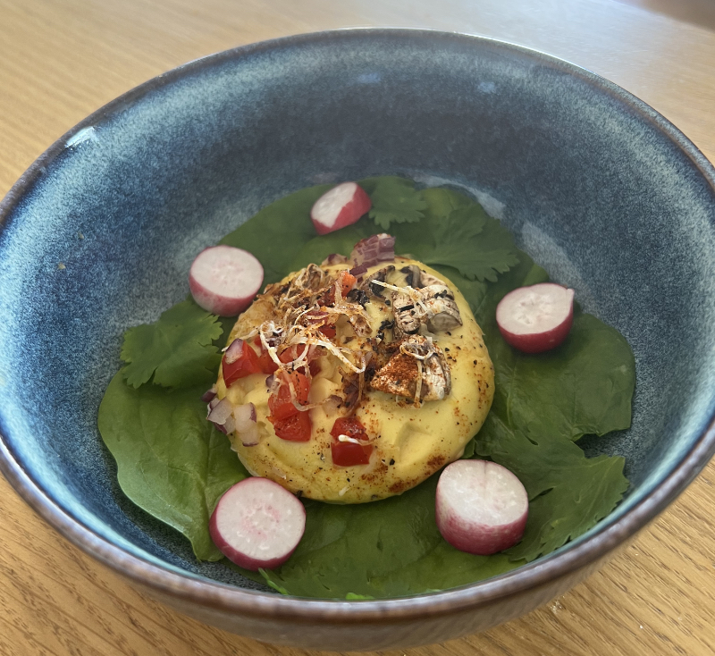
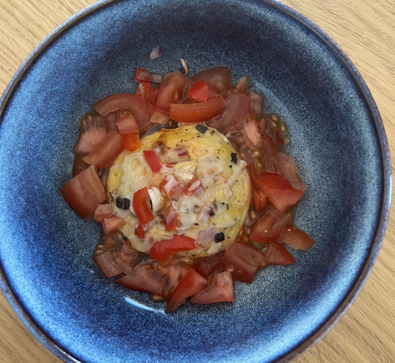
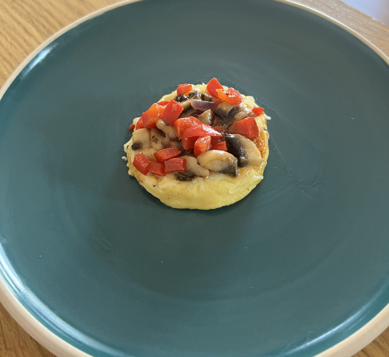
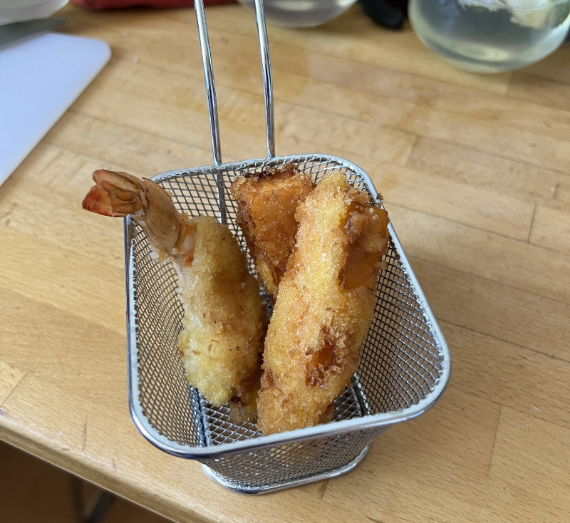

Expérimentations
Phase d'expérimentation pour de nouvelles recettes au Papondu

Le Papondu au four
- Recette: Papondu cuit au four avec des champignons, des poivrons, oignons rouges et gruyère râpé
- Aspect: Bien bombé, il a une très belle forme
- Goût: Pas génial
- Conclusion: Expérience infructueuse

Le Papondu à la vapeur
- Recette: Papondu cuit à la vapeur avec des champignons, des poivrons, oignons rouges et gruyère râpé
- Aspect: Pâle et transpirant
- Goût: Horrible
- Conclusion: Expérience non concluante

Le Papondu à la poêle, façon blinis
- Recette: Papondu cuit à la poêle avec des champignons, des poivrons, oignons rouges et gruyère râpé
- Aspect: Moins bombé qu'au four, mais pas mal
- Goût: Excellentissime
- Conclusion: A renouveler !!!!

Le Tempa pondu
- Recette: Tempura de crevette et patates douces au papondu
- Aspect: Excellent avec les patates douces, accroche un peu moins bien sur les crevettes
- Goût: A tomber par terre ou à courir sur l'eau !
- Conclusion: Il en reste encore ??